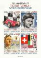
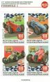

Formula 1 Seasons
Below is a list of all of the Formula 1 seasons in the decade; click on a year to see the cars and drivers featured on stamps for that specific Formula 1 season. Also listed are any specific events for the season featured on stamps in my collection and/or any stamps that feature the season in question. Click on an event or a championship winning driver name to see the stamps featuring that particular event or driver.
Below is a list of all of the Formula 1 seasons in the decade; click on a year to see the cars and drivers featured on stamps for that specific Formula 1 season. Also listed are any specific events for the season featured on stamps in my collection and/or any stamps that feature the season in question. Click on an event or a championship winning driver name to see the stamps featuring that particular event or driver.
2020
The 2020 season was due to be the 71st season which would incorporate the 70th anniversary of F1 and the season was due to run over 22 races, however, the coronavirus pandemic of 2019-2020 caused significant disruption to the season. After a delayed start to the season, 17 races took place. The races were contested behind closed doors as fans were not permitted to attend due to the ongoing pandemic situation. Some venues, such as Silverstone, held back to back races as races could not be held in many locations. The season will however be remembered as a record breaking year for Lewis Hamilton. Hamilton won his seventh Drivers' Title (equalling Michael Schumacher's record), but also Hamilton became the most successful driver ever as he overtook Schumacher's win tally of 91. Hamilton himself fell ill with Covid-19 and missed a race, making his achievement even more impressive. Also, this season F1 introduced the We Race as One campaign (an initiative to fight racism, global inequity and the impact of COVID-19) and there was growing global support for the Black Lives Matter movement, Hamilton took the knee ahead of every race he entered and wore t-shirts bearing the Black Lives Matter slogan.
The 2020 season was due to be the 71st season which would incorporate the 70th anniversary of F1 and the season was due to run over 22 races, however, the coronavirus pandemic of 2019-2020 caused significant disruption to the season. After a delayed start to the season, 17 races took place. The races were contested behind closed doors as fans were not permitted to attend due to the ongoing pandemic situation. Some venues, such as Silverstone, held back to back races as races could not be held in many locations. The season will however be remembered as a record breaking year for Lewis Hamilton. Hamilton won his seventh Drivers' Title (equalling Michael Schumacher's record), but also Hamilton became the most successful driver ever as he overtook Schumacher's win tally of 91. Hamilton himself fell ill with Covid-19 and missed a race, making his achievement even more impressive. Also, this season F1 introduced the We Race as One campaign (an initiative to fight racism, global inequity and the impact of COVID-19) and there was growing global support for the Black Lives Matter movement, Hamilton took the knee ahead of every race he entered and wore t-shirts bearing the Black Lives Matter slogan.
Constructor Title: Mercedes |

70th Anniversary of the Championship  |
70th Anniversary of the Championship |
65th Birthday of Alain Prost  |
65th Birthday of Alain Prost  |
60th Birthday of Ayrton Senna |
70th Anniversary of the F1 Championship |
70th Anniversary of the F1 Championship  |
70th Anniversary of the F1 Championship  |
70th Anniversary of the F1 Championship  |
70th Anniversary of the F1 Championship  |
70th Anniversary of the F1 Championship |
2021
The 2021 season was still impacted by the coronavirus pandemic, which resulted in some races being cancelled and some races being held an other venues. However, a full season of 22 races was held. The Chinese, Japanese, Australian, Singapore and Canadian races were all cancelled, some races were rescheduled and some new venues were introduced such as Qatar. However, the season will be remembered for the last lap of the final race which determined the drivers title. The season came down to a winner takes all race between Lewis Hamilton and Max Verstappen. The controversial handling of a late safety car, meant that Verstappen was able to pass Hamilton on the last lap to take the title. Verstappen became the first ever driver from the Netherlands, the first Honda-powered driver since Ayrton Senna in 1991, the first Red Bull driver since Sebastian Vettel in 2013 and the first non-Mercedes driver in the turbo-hybrid era to win the World Championship.
The 2021 season was still impacted by the coronavirus pandemic, which resulted in some races being cancelled and some races being held an other venues. However, a full season of 22 races was held. The Chinese, Japanese, Australian, Singapore and Canadian races were all cancelled, some races were rescheduled and some new venues were introduced such as Qatar. However, the season will be remembered for the last lap of the final race which determined the drivers title. The season came down to a winner takes all race between Lewis Hamilton and Max Verstappen. The controversial handling of a late safety car, meant that Verstappen was able to pass Hamilton on the last lap to take the title. Verstappen became the first ever driver from the Netherlands, the first Honda-powered driver since Ayrton Senna in 1991, the first Red Bull driver since Sebastian Vettel in 2013 and the first non-Mercedes driver in the turbo-hybrid era to win the World Championship.
Constructor Title: Mercedes |

2022
N/A
N/A
Constructor Title: Red Bull |

2023
N/A
N/A
Constructor Title: No title awarded |
Stamp featuring 80th Monaco Grand Prix |